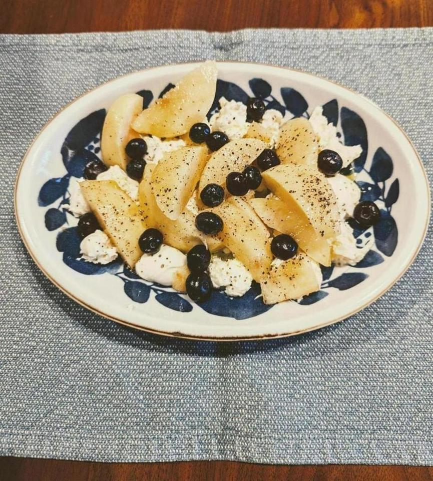

<- 日記

おしゃれ料理を作った。桃モッツァレラ。
こちらのレシピ。 https://www.futari-gohan.jp/momo-mozzarella/
最近スーパーで桃を2個買ったんだが、1個普通に食べたところそんなに甘くなかったので、ポテンシャルの低い桃の使い道として作った。
驚くほどうまい。塩こしょうするからか、甘みが強く感じる。勝手にブルーベリーとかも入れたが、存在感が弱かったので無くても良い。桃、モッツァレラチーズ、オリーブオイル、塩こしょうの組み合わせがかなりうまい。